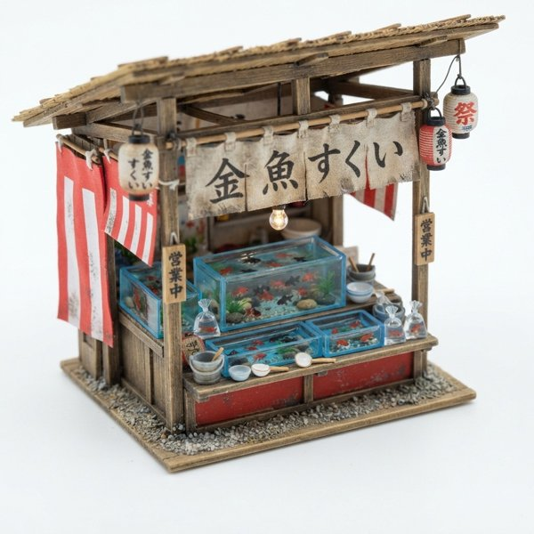
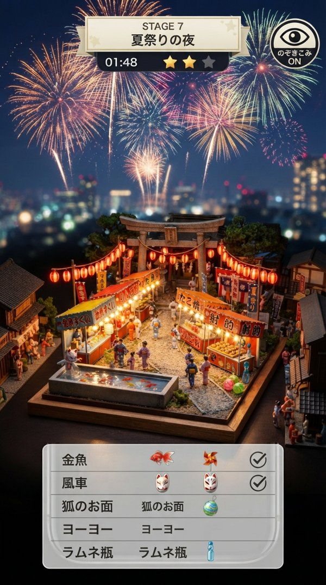

屋台6軒で、夜祭りの通りを作ってみた
Geminiで描いた元絵1枚を、自宅PCのHunyuan3D（軽量版・無料）で3D化。光とボケだけで、目標イメージにどこまで寄るかの試作です。
3Dモデルを読み込み中…
2本指で拡大・縮小／ダブルタップで寄る／なぞると覗き込み
見え方の切り替え
見るポイント
- 正面：のれんの文字や商品は、元絵の雰囲気がかなり残ります。
- 裏側・側面：元絵に写っていないので、のっぺりします。回転を制限する設計で隠す前提です。
- 6軒すべて別モデルです。元絵はGeminiで1枚ずつ作り、PCで1軒あたり約47秒で3D化しました。
- 提灯・電球・花火・地面・台座は、コードで作った簡易パーツです。

元絵（Geminiで生成、白背景）

目標イメージ（Geminiで生成した完成予想図）